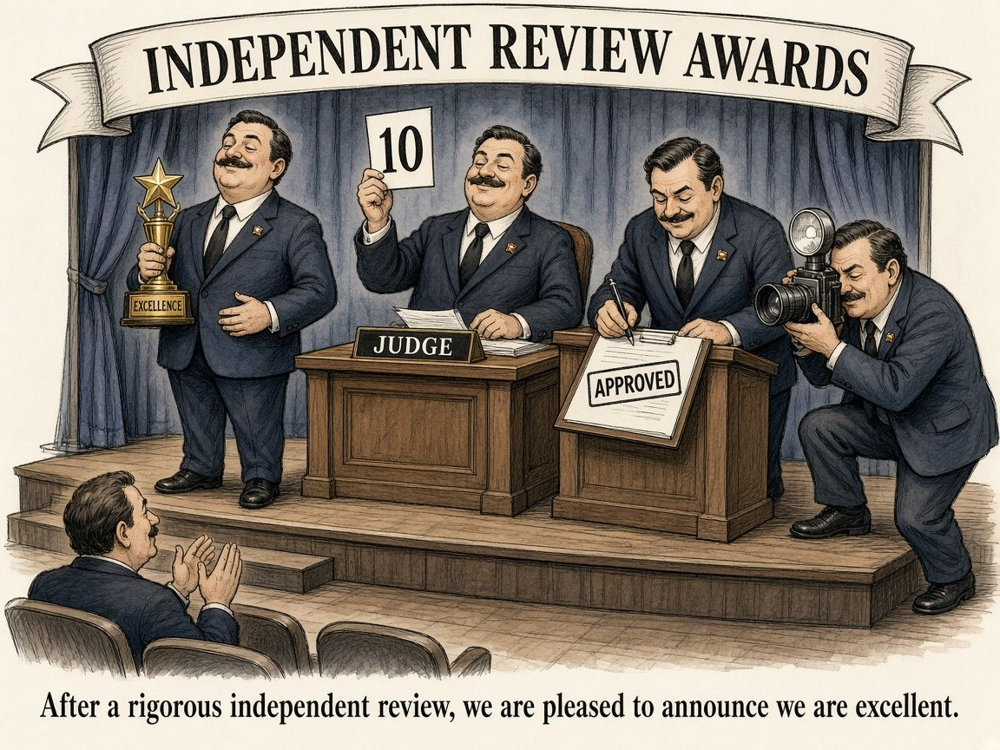

Don’t Mark Your Own Homework
One of the first controls you learn in accounting is segregation of duties. The person who sets up a supplier shouldn’t be the one who pays them. The person who raises a journal shouldn’t be the one who approves it. It’s sometimes called maker-checker: one person makes, another checks.
It isn’t because everyone’s dodgy. It’s because the person who did the work is the worst-placed person to spot what’s wrong with it. You know what you meant to do, so that’s what you see when you look back over it.

More recently, outside my day role, I’ve been spending more time on data science and AI engineering projects, and I keep noticing how often this control is missing.
Where the maker is also the checker
Pipelines that grade themselves. A job finishes, writes “success” to its own log, and that’s taken as proof the data is good. But the job only knows what it was told to check. An independent check, like comparing row counts or control totals back to the source system, catches the things the job’s author never thought of.
SQL and prompts with one reviewer: the author. A join that fans out, a filter that quietly drops a category, or a prompt tweak that fixes one case and breaks three others. These are easy to miss in your own work and surprisingly obvious to someone reading it fresh. Even a quick review from a colleague changes the odds.
LLMs judging LLMs. Using a model to score outputs is handy, but if the same model wrote the answer and grades it, you’ve rebuilt the problem accounting solved decades ago. A model can be biased toward its own style of answer. A different model as the judge, plus regular human spot checks on a sample, keeps it honest.
Models tested on what they were tuned on. This is the data science version. If you keep tweaking features until the validation score looks great, that validation set has quietly become training data. You’ve marked your own homework. A final holdout set you only look at once is the checker.
Making it practical when you’re a team of one
On side projects there often isn’t a second person, and that’s where I’ve had to get creative:
- Separate the check from the build in time. Write the tests before the code, while you still don’t know what the answer “should” be.
- Check against something outside the system. For my NBA analytics project, that means checking team totals against an official box score rather than against my own earlier tables.
- Make the checker a different tool. Use a different model as judge, or a plain rule-based check alongside the LLM one.
- Sleep on it. Reviewing your own work the next morning is a weak version of a second person, but it’s a lot better than nothing.
The takeaway
Segregation of duties exists because good people make honest mistakes, and those mistakes are invisible from the inside. Whatever you build, a pipeline, a model or a prompt, ask yourself one question: who, or what, checks this other than the thing that made it? If the answer is “the same thing,” you’ve found your next control to add.